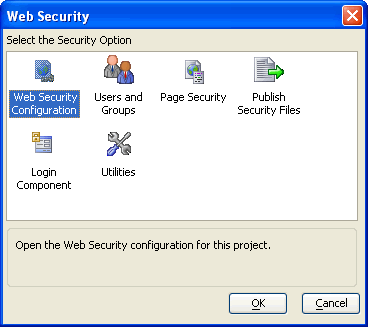
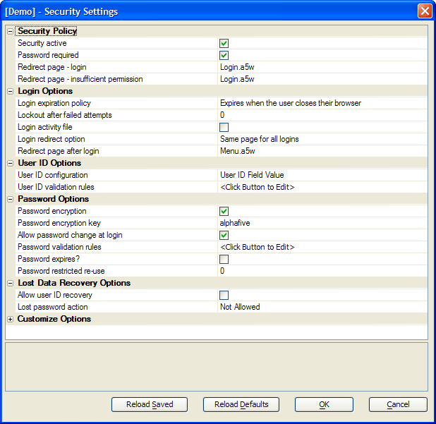
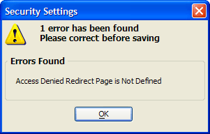

Defining Security Settings
The first step when configuring the web publishing security framework is to define the security features you want to use.
Display the Web Projects Control Panel.
Click Web Security to display the Web Security dialog. Picture
Assuming that you have not previously defined any security settings, the first step is to create the initial security settings files. Select Web Security Configuration and click OK. The Security Settings dialog will appear. Picture
{kind=link}

{kind=link}

Continue with Set security properties.
Optionally, click Reload Defaults to discard any changes you have made.
Optionally, click Reload Saved to reload any security settings previously saved.
Click OK.
If you have neglected to set any required properties, a dialog similar to the following will appear. Click OK and correct these errors. Picture
{kind=link}

Supported By
Alpha Five Version 8 Professional Edition and Above
Limitations
Web publishing applications only.
See Also
Security Component Properties, Web Application Security Framework